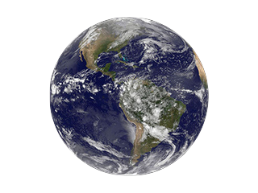

<!--
  Generated template for the EarthPage page.

  See http://ionicframework.com/docs/components/#navigation for more info on
  Ionic pages and navigation.
-->
<ion-header>

  <ion-navbar>
      <button ion-button menuToggle>
          <ion-icon name="menu"></ion-icon>
        </button>
    <ion-title>Earth</ion-title>
  </ion-navbar>

</ion-header>


<ion-content padding>
    
  <div id="position">
    <form [formGroup]="form">
        <ion-item>
          <ion-label><b>Length of String:</b></ion-label>
          <ion-input type="text"  name="title" formControlName="length"></ion-input>
        </ion-item>
       
        <button ion-button type="submit" block (click)="onSubmit()">Calculate</button>
      </form>
    </div>
    <div *ngFor="let form of submissions">
    <h1 id="demo"><b>{{form}} <br>Seconds</b></h1>
  </div>
</ion-content>
